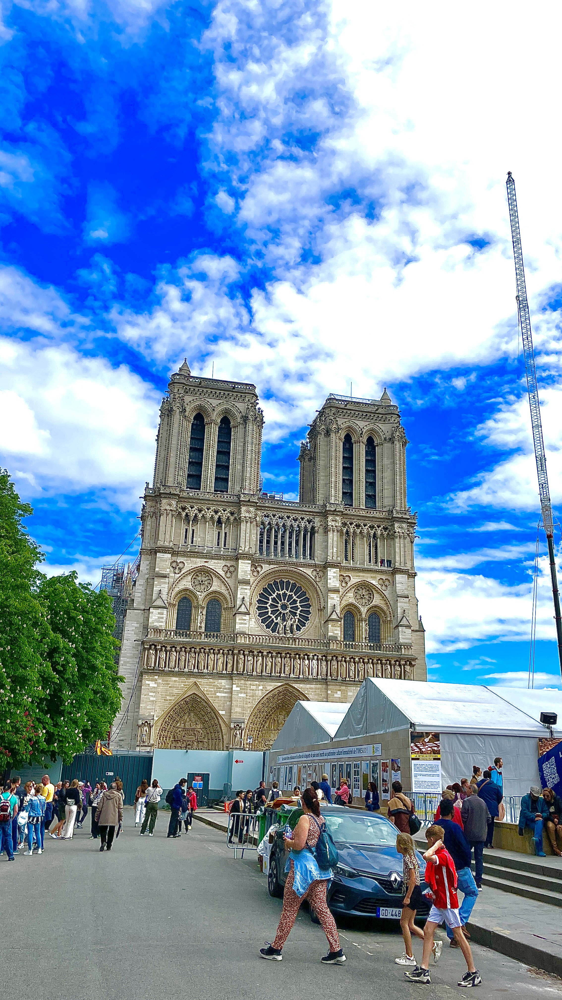
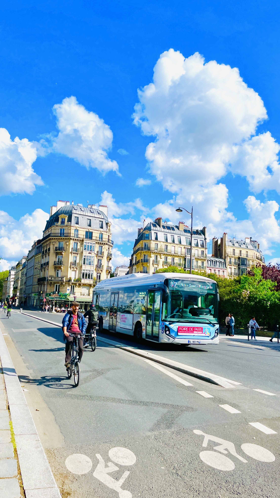
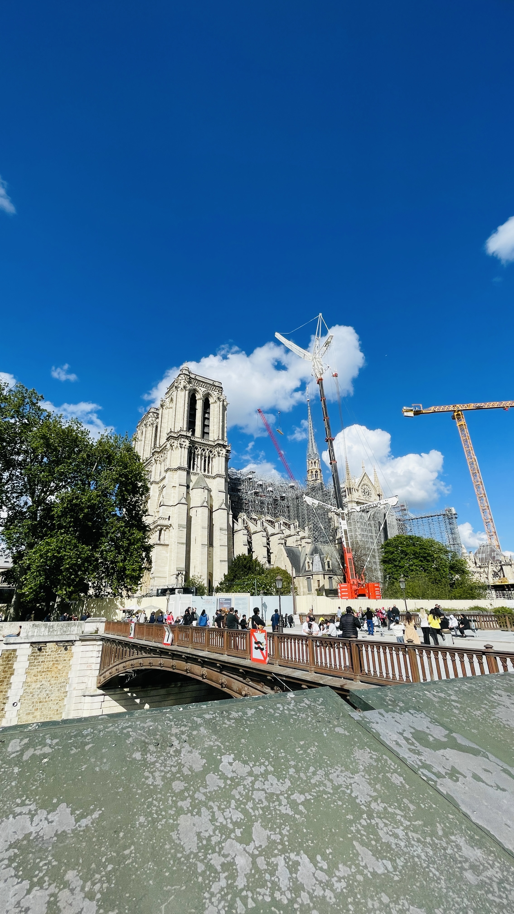
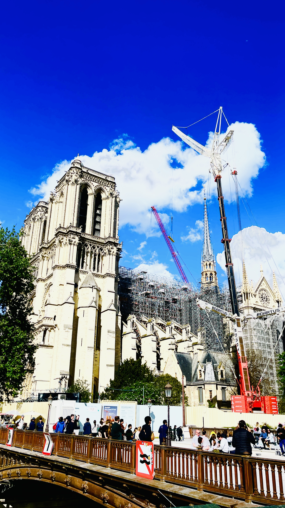

The Notre-Dame de Paris 🕍
⛪ Notre-Dame de Paris – The Beating Heart of the City
No visit to Paris is complete without standing in awe before the Notre-Dame Cathedral, a masterpiece of Gothic architecture and centuries-old history nestled on the banks of the Seine. Even after the 2019 fire, its grandeur, resilience, and symbolism still captivate travelers from around the world.
📌 Highlights of Notre-Dame:
- 🏰 Gothic Glory: A prime example of French Gothic architecture, with flying buttresses, gargoyles, stained glass, and ornate sculptures dating back to the 12th century.
- 🌉 Heart of Paris: Located on the Île de la Cité, this iconic cathedral has been the spiritual and geographical center of Paris for over 850 years.
- 🕍 Historic Significance: Witness to coronations, revolutions, and royal weddings — Notre-Dame is woven into the soul of French history.
- 🎭 Victor Hugo’s Legend: Immortalized in The Hunchback of Notre-Dame, the cathedral's towers and bell inspired generations of artists and dreamers.
- 📸 Timeless Photo Op: Capture stunning shots from the Square Jean XXIII garden, along the Seine, or across the Pont de la Tournelle.
- 🛐 Spiritual and Cultural Symbol: Even post-fire, Notre-Dame remains a beacon of faith, resilience, and French identity, with ongoing restoration work drawing global admiration.
🕒 Best Time to Visit:
- 🌄 Early Morning or Late Afternoon: Soft light for photos and a peaceful riverside atmosphere before or after the main tourist wave.
- 📆 Weekdays: Avoid weekend crowds, especially in high season (May–September).
- 🎄 Holiday Season (December): A magical time to see the cathedral’s Christmas tree and seasonal decor (from outside) along the Seine.
🧳 Things to Keep in Mind:
- 🚧 Restoration in Progress: The cathedral is closed for interior visits until the reopening (expected December 2024), but the exterior remains breathtaking.
- 👣 Explore the Surroundings: Wander through Île de la Cité and nearby Île Saint-Louis — full of quiet lanes, artisan shops, and charming cafés.
- 🗺️ Don’t Miss These Views: Pont de l’Archevêché, Square Jean XXIII, and the Left Bank riverside path at sunset.
- 🎟️ Nearby Attractions: Sainte-Chapelle, Conciergerie, and the Latin Quarter are all within walking distance.
- 🍦 Sweet Tip: Try Berthillon ice cream from Île Saint-Louis while enjoying the view of Notre-Dame. 🍨
✨ Final Thoughts
Notre-Dame is more than a monument — it’s a living symbol of Parisian soul, survival, and splendor. Though its interior may be temporarily closed, its silhouette still dominates the skyline and hearts of millions. Take a moment to pause, reflect, and feel the pulse of Paris from this sacred spot on the Seine.
Photo Gallery:





Click on the images for full screen.